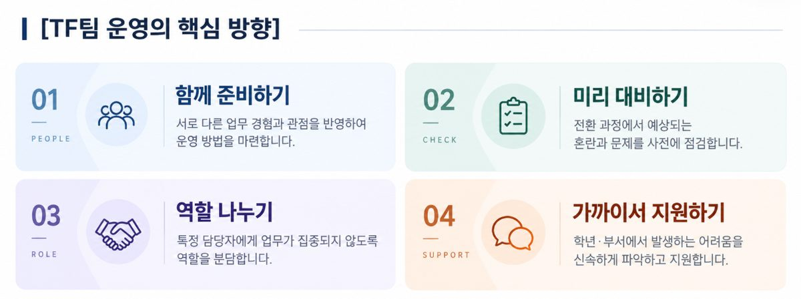
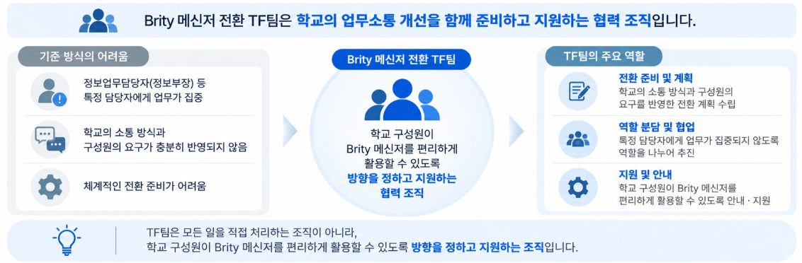
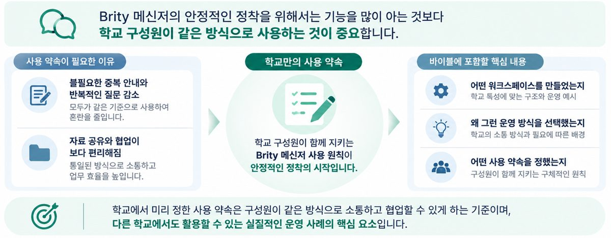
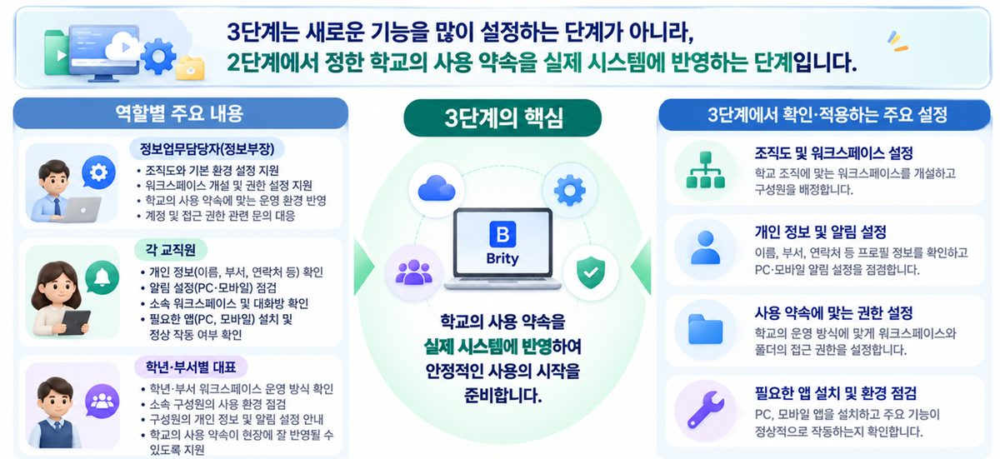
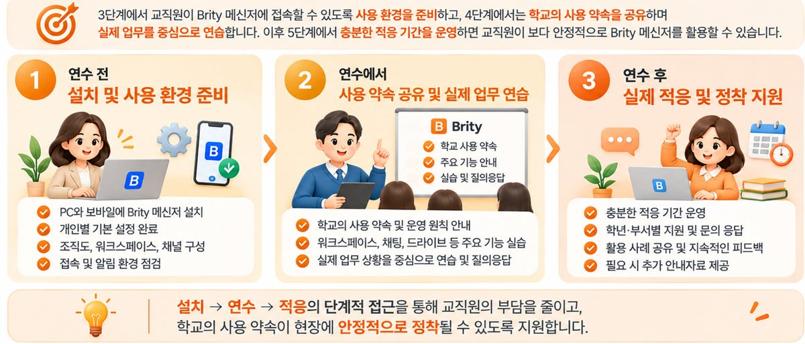
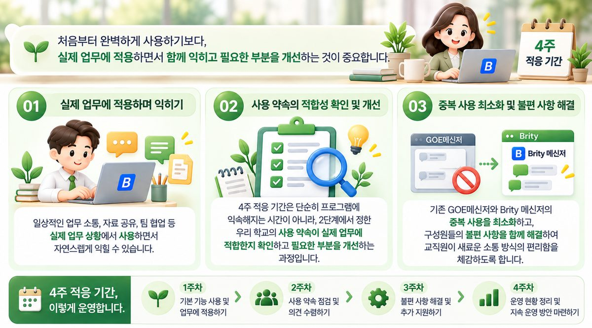

정착 길라잡이
우리 학교에 맞게 전환하는 6단계. 단계마다 체크리스트가 있고, 표시는 이 기기에 저장됩니다.
우리 학교는 지금 어디쯤인가요?
상황을 고르면 지금 필요한 단계로 바로 이동합니다.
6단계 한눈에 보기
카드를 누르면 그 단계만 펼쳐집니다. 체크리스트에 표시한 내용은 이 기기의 브라우저에 저장되어 다음에 열어도 유지됩니다.
TF팀 구성 및 현황 진단
함께 준비할 사람들을 모으고, 우리 학교의 사용 현황을 파악해요.
학교 전환 TF팀 구성 · 사용 현황 설문조사 · 결과 분석 및 과제 도출예상 기간 1주단계 살펴보기 → 02RULES사용 약속 정하기
우리 학교만의 Brity 사용 원칙을 정해요.
워크스페이스·대화방 용도 구분 · 공지·질문·답변 운영 기준 · 자료 공유 및 보안 수칙 · 학교별 사용 약속 마련예상 기간 1~2주단계 살펴보기 → 03SETUP설치 및 기본 환경 설정
바로 사용할 수 있도록 환경을 준비해요.
Brity 설치 및 로그인 안내 · 조직도 최신화 · 워크스페이스·채널 구성 · 기본 설정(알림, 권한 등)예상 기간 1주단계 살펴보기 → 04TRAINING교직원 안내 및 실습 연수
사용 방법을 함께 익히고 실제 업무로 연습해요.
기본 기능 및 사용 방법 안내 · 실제 업무 상황 실습 · 자주 묻는 질문(Q&A) 공유예상 기간 1주단계 살펴보기 → 05ADAPT4주 적응 기간 운영
실제 업무에 적용하며 불편한 점을 확인하고 보완해요.
실제 업무에 적용 · 불편 사항 수집·지원 · 사용 약속 보완 및 개선 · 간단한 중간 점검예상 기간 4주단계 살펴보기 → 06SUSTAIN지속 운영과 개선
사용 결과를 점검하고, 더 나은 업무소통 환경으로 발전시켜요.
운영 성과 점검 및 사후 설문 · 개선 사항 반영 및 기준 보완 · 신규 교직원 안내 체계 · 우수 사례 공유·확산예상 기간 학기별(지속)단계 살펴보기 →Brity 메신저 전환 TF팀 구축
학교 구성원이 함께 준비하고 지원하는 Brity 메신저 전환
전환을 함께 준비할 팀을 꾸리고 역할을 나눕니다.
교감 주관, 교무부장·정보업무담당자 필수, 학년·행정실 대표
1주
TF 구성표(역할·담당)와 교직원 문의 창구
TF팀은 누구로 구성할까요?
아래는 하나의 예시입니다. 학교 규모, 조직 체계, 업무분장과 구성원 역량에 따라 조정해 운영합니다.
| 구성원 | 담당 역할 | 실제로 하는 일 |
|---|---|---|
| 교감 | TF 총괄 및 조정 | 운영 방향 설정, 구성원 간 역할 조정, 주요 불편 사항 해결 지원 |
| 교무부장 | 학교 전체 업무소통 방식 마련 | 전체 공지, 업무 협조 요청, 제출 안내 등의 운영 방법 정리 |
| 교육과정(연구)부장 | 교육과정 관련 소통·협업 방식 마련 | 교육과정 자료 공유, 공동 문서 작성, 학년·부서 간 협업 방법 검토 |
| 정보업무담당자(정보부장) | 기본 환경 설정 및 기술 지원 | 조직도 세부 설정, 워크스페이스 초기 설정, 설치·계정·접속 지원 |
| 행정실 담당자 | 행정실 내, 교원 간 소통·협업 방식 검토 | 행정실 내 소통 방식 검토, 구성원 의견 수렴, 교원과의 업무소통 개선 방안 제안 |
| 학년 대표 | 학년 의견 수렴 및 현장 지원 | 학년별 사용 의견·불편 사항 취합, 간단한 사용 문제 지원, TF팀에 개선 의견 전달 |
TF팀은 어떤 일을 하나요?
우리 학교의 소통 방식 진단하기
주로 사용하는 소통 매체, 중복 안내, 소통 과정의 불편함, 학년·부서 간 협업 현황을 살펴봅니다.
Brity 메신저 사용 방법과 약속 정하기
전체 공지와 학년·부서별 소통을 위한 워크스페이스 구성 방향, 공지·답글·자료 공유에 관한 기본 원칙을 협의합니다.
교직원이 사용할 기본 환경 준비하기
조직도의 세부 구성을 확인하고, 학교에서 정한 운영 방식에 맞게 워크스페이스를 설정합니다.
우리 학교에 맞는 사용 가이드 만들기
자주 쓰는 기능과 학교 공통 사용 약속을 중심으로 이해하기 쉬운 안내자료를 만듭니다.
교직원 안내 연수 지원하기
기본 사용 방법을 안내하고, 실제 업무 상황을 활용한 실습으로 적응을 돕습니다.
적응 기간 동안 불편 사항 확인하고 지원하기
학년·부서별 의견을 수렴하고, 사용 중 생기는 문제를 함께 해결하며 운영 방법을 보완합니다.

1. TF팀은 왜 필요할까요?
Brity 메신저 전환은 단순히 새 프로그램을 설치하는 일이 아닙니다. 오랫동안 써 온 GOE 메신저에서 새로운 소통 도구로 옮겨 가는 만큼 학교의 업무소통 방식과 교직원의 사용 경험에도 변화가 필요합니다. 정보업무담당자 혼자 준비하기보다 학교의 업무와 소통 특성을 잘 아는 구성원이 함께 참여해 여러 관점에서 준비해야 합니다. 이때는 다음과 같은 점을 고려하면 좋습니다.
- 전환의 필요성과 기대 효과를 교직원이 구체적으로 이해하도록 합니다.
- 전체 협의회 5분, 학년·부서 대표를 통한 의견 수렴, 간단한 설문 중 학교에 맞는 방법을 정합니다.
- 반대 의견이나 우려는 기록하고, STEP 02 약속에 반영했는지 여부를 공개적으로 답합니다.
- 먼저 익숙해진 교직원(TF팀 내 학년 대표)이 동료를 돕는 구조를 만듭니다.
우리 학교의 소통 현황은 부록1 출발점 진단표로 파악할 수 있습니다.

우리 학교 Brity 메신저 사용 약속 정하기
처음부터 사용 기준을 명확하게! 혼란을 줄이고 업무소통은 더 편리하게!
어디에 올리고, 어떻게 알리고, 어떻게 답할지 정합니다.
TF팀 협의, 교직원 의견 수렴
1~2주
우리 학교 사용 약속 한 장과 공지 형식
학교에서 미리 정하면 좋은 7가지 사용 약속
워크스페이스, 대화방, 쪽지, Brity 드라이브의 용도를 구분해요
어떤 내용을 어디에 올릴지 가장 먼저 정합니다.
공지는 정해진 형식으로 작성해요
[분류] 제목 · 내용 · 기한 · 링크 · 문의
질문과 답변은 해당 공지의 답글로 남겨요
여러 사람에게 도움이 되는 질문은 답글(스레드)로.
단순 확인은 이모지로 표시해요
"확인했습니다" 답글 대신 이모지 반응으로.
자료는 가급적 드라이브 링크로 공유해요
최신본 혼란과 반복 전달을 줄입니다.
메시지 발송 시간과 알림을 배려해요
근무시간 외 발송 자제, 예약 발송 활용.
개인정보와 공식 업무처리 기준을 지켜요
민감 정보는 공개 공간에 올리지 않고, 공식 절차는 기존 시스템으로.
모든 항목을 그대로 적용하기보다
학교의 업무 특성에 맞게 조정하세요.
학교에서 실제로 정해 볼 사용 약속
아래는 TF팀이 학교 구성원의 의견을 반영하여 정할 수 있는 예시입니다. 모든 항목을 그대로 적용하기보다 학교의 업무 특성에 맞게 조정하면 됩니다. 지킬 약속을 고르고 우리 학교 이름과 빈칸을 채우면 교직원에게 안내할 한 장이 만들어집니다. 입력한 내용은 이 기기에만 저장됩니다.
Brity 메신저 약속을 정할 때 함께 확인할 사항
- 워크스페이스 관리자는 정보부장과 교무부장 등 2명 이상으로 지정해 담당자 변경에 대비합니다.
- 게시 권한은 채널별로 정합니다. 예: 공식 공지 채널은 업무담당자, 질문 채널은 전 교직원
- 전출·퇴직 시 계정과 자료 인수인계 방법을 미리 정합니다.
- 학생 개인정보와 평가 자료는 접근 권한을 필요한 사람으로 한정하고, 외부 공유 링크 설정을 점검합니다.
- 결재가 필요한 업무와 근거 자료로 보존해야 하는 업무는 메신저 게시와 별도로 기존 공식 절차(전자결재 · 공문)를 병행합니다.
약속별 자세히 보기
약속 ① 워크스페이스, 대화방, 쪽지, Brity 드라이브의 용도를 구분해요
용도를 구분하기 전, 각 기능과 특징을 우선 살펴본 후 학교 실정에 맞게 기능 및 용도를 구분합니다.
| 구분 | 기능 및 특징 | 활용 기준 | 학교 적용 예시 |
|---|---|---|---|
| 워크스페이스 | 여러 구성원이 게시물을 작성하고 답글로 소통하며 자료를 공유하는 협업 공간 | 공식 공지, 자료 공유, 질문·답변 및 공동 협의 | 학사일정, 연수 안내, 자료 제출 요청, 학년·부서별 협업 |
| 대화방 공지 | 공지자 1명이 내용을 전달하며, 수신자는 이모지 반응만 가능 | 질문이나 협의가 필요 없는 단순 안내·전달 | 회의 장소 변경, 간단한 일정 안내 |
| 대화방 대화 | 특정 상대와 실시간으로 메시지를 주고받는 쌍방향 소통 | 개별적인 업무 문의 및 빠른 협의 | 개인 일정 확인, 담당자 간 업무 협의 |
| 쪽지 | 특정 수신자에게 메시지를 보내는 개별 전달 | 답변이나 실시간 협의가 필요하지 않은 개별 안내 | 개별 자료 전달, 특정 교직원 대상 업무 안내 |
| Brity 드라이브 | 자료 저장·공유 및 공동 편집 | 파일 보관, 공유, 공동 작성 | 평가계획, 학년 교육과정, 공동 작성 문서 |
공지방이 너무 많아져서 헷갈려요. 대화방 공지는 담당자별로 공지방이 늘어나거나 별도의 질문·협의가 필요한 경우가 생길 수 있습니다. 여러 업무담당자가 공지를 게시하거나 질문·답변이 필요한 업무는 워크스페이스 중심으로 운영하는 방식을 고려할 수 있습니다. 다만 대화방 공지, 일대일 대화, 쪽지도 각각 장점이 있으므로 없애거나 일률적으로 제한하기보다 학교 상황에 맞게 역할을 구분하는 것이 중요합니다.
약속 ② 공지는 정해진 형식으로 작성해요
공지마다 작성 방식이 다르면 내용을 파악하기 어렵습니다. 형식을 통일하면 중요한 정보를 빠르게 확인할 수 있습니다. 단, 모든 공지에 모든 항목을 채울 필요는 없습니다. 단순한 연수 자료 공유라면 제출 기한은 생략할 수 있습니다.
| 항목 | 작성 약속 |
|---|---|
| 제목 | [제출], [안내], [협조], [일정] 등 분류 표시 |
| 내용 | 무엇을 해야 하는지 1~2줄로 명확하게 작성 |
| 기한 | 제출 또는 확인 기한이 있을 때 표시 |
| 링크 | 관련 자료나 공동 작성 문서 연결 |
| 문의 | 담당자 또는 담당 부서 표시 |
공지 형식 템플릿 (복사해서 바로 쓰세요)
📌 [분류] 제목 ← [제출] [안내] [협조] [일정] 중 하나 ■ 내용: 무엇을 협조·제출해야 하는지 1~2줄 ■ 제출(확인) 기한: 2026. 0. 0.(요일) 까지 ■ 링크: Brity 드라이브 링크 ■ 문의: 담당자명 (부서) ※ 문의·답변은 이 공지의 답글로 남겨 주세요.
작성 예시
📌 [제출] 2학기 학년별 평가계획 작성 안내 ■ 내용: 학년별 평가계획을 공동 문서에 작성해 주세요. ■ 제출(확인) 기한: 2026. 10. 23.(금) 까지 ■ 링크: Brity 드라이브 공동 작성 문서 ■ 문의: 교육과정부 업무담당자 ※ 문의 사항은 이 공지의 답글로 남겨 주세요.
약속 ③ 질문과 답변은 해당 공지의 답글로 남겨요
공지에 관한 질문을 개인 메시지로 보내면 담당자가 같은 질문에 여러 번 답해야 합니다. 여러 사람에게 도움이 되는 질문은 해당 공지의 답글(스레드)로 남기는 것을 원칙으로 정할 수 있습니다. 다만 개인정보가 포함된 내용이나 개별적으로 확인할 사안은 공개 답글 대신 적절한 별도 연락 방법을 활용합니다.
약속 ④ 단순 확인은 이모지로 표시해요
"확인했습니다", "네", "알겠습니다" 등의 답글이 많아지면 중요한 질문과 답변을 찾아보기 어려울 수 있습니다. 단순 확인은 이모지 반응으로 표시하도록 정할 수 있습니다.
약속 ⑤ 자료는 가급적 드라이브 링크로 공유해요
파일을 여러 사람에게 각각 보내면 수정본이 생길 때마다 다시 전달해야 하고 어떤 파일이 최신본인지 헷갈립니다. 공동으로 사용하거나 수정해야 하는 자료는 Brity 드라이브에 보관하고 링크로 공유하는 방법을 권장합니다.
Brity 드라이브 자료 공유 시 사용 약속(예시)
- 자료는 드라이브, 소통은 워크스페이스로 구분하여 활용한다.
- 자료는 학년·부서·업무별 표준 폴더에 저장한다.
- 파일명은 정해진 규칙에 따라 작성한다. [학년·부서]_[업무명]_[작성일 또는 기준일]_[진행상태]
- 파일을 반복 첨부하기보다 드라이브 링크로 공유한다.
- 공동 작성 자료는 하나의 파일을 '편집'으로 열어 함께 작성한다.
- 자료 취합 중에는 파일명에 '_수합중'을 표시하고, 완료 후 삭제한다.
- 자료 공유 전 구성원의 조회·편집 권한을 확인한다.
- 공지에는 자료 링크와 작성 기한, 문의 담당자를 함께 안내한다.
- 학생 개인정보가 포함된 자료는 접근 권한과 보안 기준을 준수한다.
약속 ⑥ 메시지 발송 시간과 알림을 배려해요
Brity 메신저를 활용하더라도 교직원의 업무시간은 존중되어야 합니다. 근무시간 외 불필요한 메시지 발송을 자제하고, 필요한 경우 예약 발송 기능을 활용하도록 합니다.
메시지 발송 약속(예시)
- 근무시간 외 또는 휴일에는 긴급하지 않은 메시지 발송을 자제합니다.
- 다음 근무일에 전달해도 되는 내용은 예약 발송 기능을 활용합니다.
- 개인별 알림 설정은 업무 특성과 필요에 따라 조정합니다.
약속 ⑦ 개인정보와 공식 업무처리 기준을 지켜요
Brity 메신저는 업무소통과 협업을 지원하는 도구이며 모든 업무를 메신저로 처리하는 것은 아닙니다. 학생 개인정보나 민감한 내용은 공개 워크스페이스에 게시하지 않도록 주의하고, 전자결재나 공식 문서 접수·시행 등 정해진 행정 절차가 필요한 업무는 기존의 공식 업무처리 시스템과 절차를 따릅니다.
1. 왜 사용 약속을 미리 정해야 할까요?
Brity 메신저는 워크스페이스, 채팅, 드라이브 등 다양한 기능을 제공합니다. 구성원이 각자 다른 방식으로 쓰면 새 메신저가 오히려 불편해집니다. 사용 약속은 복잡한 규정이 아니라, 자주 쓰는 기능에 대해 "어디에 올리고, 어떻게 알리고, 어떻게 답할 것인가"를 미리 정하는 것입니다.

Brity 메신저 사용 환경 준비하기
설치부터 조직도·워크스페이스 설정까지, 교직원이 바로 사용할 수 있도록 준비하기
정한 약속을 실제 시스템에 반영합니다.
정보업무담당자 중심, 교직원은 각자 개인 설정
1주
조직도 정비, 공식 워크스페이스·채널, 전원 로그인 확인
단계별 사용 환경 준비 절차
Brity 메신저 설치 및 로그인
담당(권장 예시): 전체 교직원(개별 설치), 정보업무담당자(설치 지원)PC용 프로그램을 설치하고 필요에 따라 모바일 앱도 설치합니다. 학교에서 안내한 계정으로 로그인해 정상 접속되는지 확인합니다.
- PC 프로그램 설치 및 로그인 여부
- 모바일 앱 설치 및 로그인 여부(희망자)
- 메시지 수신 및 알림 작동 여부
개인별 기본 정보 및 사용 환경 설정
담당(권장 예시): 전체 교직원교직원이 자신의 정보와 사용 환경을 확인합니다. 개인 프로필을 확인하고, 필요한 정보를 입력하거나 수정합니다. 이 부분도 학교에서 어느 정도의 지침을 안내하면 좋습니다. 알림 등 기본 설정도 자신의 업무 특성에 맞게 조정합니다.
- 개인 정보: 이름, 소속, 직위 등 기본 정보 확인
- 프로필: 필요에 따라 프로필 사진 및 표시 정보 설정
- 연락 정보: 업무에 필요한 정보 확인·입력
- 알림 설정: PC·모바일 알림, 소리 등 개인별 설정
- 사용 환경: 자주 사용하는 기능과 화면 설정 확인
학교 조직도 확인 및 정비
담당(권장 예시): 정보업무담당자 중심, TF팀의 학년·부서별 대표와 행정실 대표가 함께 점검기존 GOE 메신저와 연동된 조직도 정보를 바탕으로 학교의 실제 조직과 일치하는지 확인합니다.
- 구성원: 전입·전출, 신규 교직원 반영 여부
- 학년·부서: 실제 조직 및 업무분장과 일치하는지
- 소속 정보: 소속과 직위가 정확한지
- 누락·오류: 조직도에 없는 구성원이나 잘못 표시된 정보
워크스페이스 및 채널 만들기
담당(권장 예시): 정보업무담당자, 교무부장 등 TF팀2단계 사용 약속에 따라 워크스페이스를 개설하고 구성원을 초대한 뒤 업무 성격에 맞는 채널을 만듭니다.
- 워크스페이스의 이름과 용도가 명확한가?
- 참여해야 할 구성원이 빠짐없이 포함되었는가?
- 채널이 지나치게 많거나 중복되지 않는가?
- 게시 및 자료 공유 권한이 사용 약속에 맞게 설정되었는가?
실제 사용 환경 최종 점검
담당(권장 예시): TF팀, 학년·부서별 대표설정이 끝나면 TF팀 구성원이 직접 접속해 기본 기능이 정상 작동하는지 확인합니다.
워크스페이스와 채널 구성 예시
※ 위 구성은 예시입니다. 학교에서 정한 운영 방식에 따라 채널을 줄이거나 학년·부서별 독립 워크스페이스를 추가할 수 있습니다.
직군별 환경 점검 사항(예시)
| 구성원 | 점검 사항 |
|---|---|
| 교원 | PC 설치, 모바일 선택 설치, 교과·학년 소통 공간 참여 |
| 행정실 | 행정실 내 소통 공간과 교원 간 소통 공간 구분 |
| 교육공무직(돌봄·급식·특수지원 등) | PC 사용이 어려우면 모바일 앱 중심으로 안내, 근무시간 외 알림 설정 안내 |
| 기간제교사·신규 전입 | 계정·조직도 반영 여부 우선 확인 |
| 정보업무 담당자(정보부장) | 공지 확인 방법, 알림 설정 |
1. 왜 사용 환경을 미리 준비해야 할까요?
3단계는 새로운 기능을 많이 설정하는 단계가 아니라, 2단계에서 정한 사용 약속을 실제 시스템에 반영하는 단계입니다. 약속이 정해져 있어도 설치, 개인 설정, 조직도 정비, 워크스페이스 구성이 제대로 되지 않으면 소통에 혼란이 생깁니다. 정보업무담당자에게 모든 일이 몰리지 않도록 개별 교직원은 자신의 기본 설정을 완료하고, TF팀은 학교 공통 환경을 함께 점검하는 방식으로 역할을 나눕니다.

Brity 메신저 교직원 안내 및 실습 연수
우리 학교 사용 약속을 공유하고, 실제 업무 상황에서 직접 익히기
약속을 공유하고 실제 업무로 연습합니다.
TF팀 진행, 전 교직원 참여
1주
연수 완료, FAQ와 문의 방법 공유
40분 실습형 연수 예시 시간 조정 가능
| 시간 | 내용 | 세부 |
|---|---|---|
| 5분 | 전환 취지 및 우리 학교 사용 약속 안내 | 왜 전환하는지, 공식 공지는 어디서 확인하는지 |
| 10분 | 기본 기능 익히기 | 조직도 검색, 일대일 대화, 대화방 공지, 쪽지, 워크스페이스 차이 이해 |
| 15분 | 실제 업무 상황 실습 | 공지 확인, 답글 작성, 이모지 반응, 드라이브 자료 열기 및 공동 작성 |
| 5분 | 개인별 설정 점검 | 프로필, 알림 설정, 워크스페이스 참여 상태 확인 |
| 5분 | 질의응답 및 적응 기간 안내 | 자주 묻는 질문, 도움 요청 방법, 4주 적응 기간 안내 |
교직원 연수 자료
| 자료 | 주요 내용 | 활용 방법 |
|---|---|---|
| 우리 학교 사용 약속 | 공지 공간, 제목 분류 표시(핵심용어), 답글·이모지, 자료 공유 기준 | 연수 시작 시 안내 및 상시 공유 |
| 기본 기능 안내자료 | 대화·공지·쪽지·워크스페이스·드라이브 | 기능 차이 설명 |
| 따라 하기 | 실습지 5~6개 과제 | 연수 중 직접 실습 |
| 자주 묻는 질문(FAQ) | 알림, 조직도, 워크스페이스 참여, 자료 공유 등 | 연수 후 참고 |
| 도움 요청 안내 | 담당자 또는 문의 채널, 적응 기간 운영 방식 | 사용 중 문제 해결 |
교직원 구체적 연수 자료는 [부록4]를 참고하세요. 디지털 활용에 어려움이 있는 교직원은 학년에서 일대일로 적응에 도움을 줍니다.
현장 팁 A초등학교는 기능을 많이 소개하기보다 "공지 확인 → 링크로 문서 열기 → 내 칸에 입력하고 저장"처럼 당장 협업에 필요한 절차부터 안내했고, 연수 미참석자를 위한 자율 연수 자료와 퀵가이드를 함께 마련했습니다. (학교 사례 보기)
1. 연수는 어떻게 운영할까요?
교직원 연수는 Brity 메신저의 모든 기능을 설명하는 시간이 아닙니다. TF팀에서 정한 우리 학교의 사용 약속을 안내하고, 교직원이 실제 업무에 필요한 기능을 직접 써 보는 시간으로 운영합니다. 30~40분 내외의 짧은 실습형으로, 학교 여건에 따라 전체 연수 또는 학년·부서별 소규모 연수로 진행할 수 있습니다.

Brity 메신저 4주 적응 기간 운영하기
부담 없이 시작하고, 함께 익히며, 우리 학교에 맞게 안정적으로 정착하기
실제 업무에 적용하며 불편을 고치고 정착시킵니다.
전 교직원 사용, TF팀 지원
4주
보완된 사용 약속, GOE 메신저 종료 기준
4주 적응 기간, 이렇게 운영해 보세요
익숙해지기: 기본 사용
참여할 워크스페이스·대화방을 확인하고 공지 열람·답글·이모지 반응을 실제 업무에서 써 봅니다.
업무에 적용하기: 실제 활용
자료 공유, 공동 문서 작성, 질문과 답변 등 일상 협업에 사용 약속을 적용합니다.
불편함 개선하기: 의견 수렴
반복되는 문제를 사용 미숙 / 설정 문제 / 약속 개선 필요로 구분해 해결합니다.
운영 방식 정착하기: 안정화
중복된 공지 공간을 정리하고 사용 약속을 최종 보완해 기본 운영 방식으로 정착시킵니다.
1주 차 실제 적용 예시와 TF팀 지원
- 교무부에서 교직원 협의 워크스페이스에 주간 업무를 안내하고, 교직원이 해당 공지를 확인하기
- 교직원 연수 안내 게시물에 확인 이모지를 남기고, 궁금한 사항은 답글로 질문하기
- 개인별 알림 설정과 모바일 접속 상태를 확인하고 불편한 사항을 담당자에게 전달하기
TF팀 지원: 접속 오류, 워크스페이스 미참여, 알림 누락 등 초기 사용 문제를 확인하고 지원합니다.
2주 차 실제 적용 예시와 TF팀 지원
- 교육과정부에서 [제출] 학년별 평가계획 작성 안내 공지를 게시하고, 작성 기한과 Brity 드라이브 링크를 함께 안내하기
- 학년별 교사가 공유된 평가계획 문서를 함께 작성하여 개별 파일을 반복적으로 주고받는 과정 줄이기
- 평가계획 작성 방법에 대한 공통 질문을 공지의 답글로 남겨 다른 교직원도 답변을 확인하도록 하기
- 긴급한 일정 변경은 학교에서 정한 대화방 공지 활용 기준에 따라 안내하기
TF팀 지원: 공지 형식, 자료 공유 방식, 워크스페이스와 대화방의 활용 기준이 잘 지켜지고 있는지 살펴봅니다.
3주 차 현장에서 발생한 문제와 개선 방안
| 현장에서 발생한 문제 | 개선 방안 |
|---|---|
| 공지 알림을 받지 못하는 교직원이 있음 | 알림 설정과 워크스페이스 참여 상태 확인 |
| 같은 공지가 여러 공간에 반복 게시됨 | 공식 게시 공간을 재안내하고 중복 게시 방식 개선 |
| 공지에 대한 질문이 개별 대화로 반복됨 | 공통 질문은 해당 게시물의 답글로 안내 |
| 공동 문서의 편집 권한이 없어 작성하지 못함 | Brity 드라이브 공유 권한 확인 및 조정 |
| 학년·부서별 소통 공간이 불편함 | 기존 대화방 활용 또는 별도 워크스페이스 필요성 검토 |
TF팀 지원: 학년별 대표와 행정실 대표 등이 구성원의 의견을 수렴하고, 공통으로 발생하는 문제를 중심으로 개선합니다. 모든 의견을 새 규칙으로 만들기보다 실제 업무에 도움이 되는 사항부터 반영합니다.
4주 차 실제 적용 예시와 TF팀 지원
- 동일한 업무 공지가 GOE 메신저와 Brity 메신저에 반복 게시되고 있는지 확인하기
- 활용도가 낮거나 중복된 공지방·워크스페이스의 정리 필요성 검토하기
- 공지 제목의 핵심용어 표시, 답글 활용, 드라이브 링크 공유 등의 실천 상황 확인하기
- 학교의 사용 약속을 최종 보완하여 교직원에게 안내하고, 신규 교직원이나 사용에 어려움이 있는 구성원을 위한 간단한 안내자료 마련하기
TF팀 지원: 개선 결과를 정리하고, 기존 GOE 메신저와 Brity 메신저의 역할을 명확히 하여 중복 사용을 줄이는 방향으로 운영 기준을 보완합니다.
적응 기간에 꼭 지키면 좋은 운영 원칙
원칙 ① GOE 메신저와의 중복 사용 최소화
같은 공지를 두 곳에 계속 올리면 교직원은 두 시스템을 모두 확인해야 합니다. Brity로 전환할 업무와 한시적으로 유지할 업무를 미리 구분하고, 전환 기간과 GOE 메신저 사용 종료 기준을 교직원에게 미리 안내합니다. 교육청의 전환 일정이나 운영 지침이 있으면 우선 반영합니다.
원칙 ② 불편 사항은 한곳에서 모아 해결
정보업무담당자 한 사람에게 모두 문의하기보다 학년·부서별 대표가 간단한 문제를 먼저 확인하고, 필요한 사항을 TF팀에 전달합니다. 로그인·설치 오류는 정보업무담당자, 공지 위치 혼란은 사용 약속 안내자료, 답글·이모지 미숙은 학년 대표가 안내하는 식으로 나눕니다.
원칙 ③ 사용 약속은 유지하되 필요한 부분만 보완
약속을 매번 바꾸면 혼란이 생깁니다. 개인별 사용 미숙은 안내와 실습으로 해결하고, 여러 교직원에게 반복되는 문제나 실제 업무에 불편을 주는 기준만 TF팀에서 검토해 조정합니다.
| 구분 | 운영 예시 |
|---|---|
| Brity 메신저 | 학교 공식 공지, 교직원 간 업무 소통, 자료 공유 |
| GOE 메신저 | 전환 초기 별도 확인이 필요한 업무 등 학교에서 정한 한시적 사용 범위 |
| 전환 이후 | Brity 메신저 중심으로 운영하고 불필요한 중복 사용 정리 |
흔한 실패 패턴과 예방법
| 실패 패턴 | 예방법 |
|---|---|
| 워크스페이스·채널을 너무 많이 만들어 오히려 혼란 | 채널을 적게 시작하고 3주 차에 필요성 검토 |
| Brity 사용 약속을 지키지 않음 | 관리자와 부장이 먼저 약속대로 사용, 안내장 공유 |
| 같은 공지를 GOE·Brity·단체 카톡에 중복 게시 | 공식 공간을 하나로 정하고 중복 게시 점검 |
| 4주 후 예전 방식으로 복귀 | 6단계 점검 일정을 미리 정함 |
| 정보부장에게 문의 집중 | 대표·선도 교사의 1차 지원, FAQ 상시 공유 |
| 약속을 수시로 바꿔 혼란 | 반복 문제만 모아 한 번에 보완 |
1. 왜 적응 기간이 필요할까요?
설치와 연수를 마쳤더라도 오랫동안 써 온 GOE 메신저에서 한 번에 전환하기는 쉽지 않습니다. 워크스페이스에 공지를 올리고, 답글로 질문하고, 드라이브로 자료를 공유하는 방식은 실제 업무에서 반복해 봐야 익숙해집니다. 적응 기간은 새 업무를 추가하는 기간이 아니라, 기존 업무를 Brity 메신저로 처리하면서 사용 방법을 익히는 기간입니다. 특히 2단계에서 정한 사용 약속이 실제 업무에 맞는지 확인하는 것이 중요합니다.

지속 운영과 개선
담당자가 바뀌어도, 새 구성원이 들어와도 유지되는 운영 방식 만들기
점검 시점과 담당을 미리 정해 운영 방식이 흔들리지 않게 합니다.
TF팀, 교무부장·정보부장, 학년 대표·선도 교사
학기별(지속)
연간 운영 캘린더, 점검 일정과 담당, 인수인계 방법
연간 운영 캘린더
| 시기 | 할 일 | 담당(예시) |
|---|---|---|
| 업무분장 확정 직후 | 조직도·워크스페이스 구성원 갱신, 관리자 계정 인수인계 | 정보부장, 교무부장 |
| 3월 초 | 신규 전입 교직원 안내(안내장·FAQ, 15분 실습) | TF팀의 학년 대표, 선도 교사 등 |
| 학기 중 1회 | 정착 점검 기준으로 소통 방식·중복 공지·만족도 점검 | TF팀 |
| 학기 말 | 사용 약속 보완, 낮은 활용 공간 정리 | TF팀 |
| 연말 | 다음 학년도 TF 인수인계, 안내자료 갱신 | 교무부장, 정보부장 |
Brity 메신저 학교 맞춤형 정착 점검 기준과 측정 지표(예시)
| 점검 영역 | 확인 내용 | 측정 지표(예시) | 측정 시점 |
|---|---|---|---|
| 사용 환경 | 교직원이 필요한 워크스페이스에 정상적으로 참여하고 있는가? | 참여율(참여 인원/전체 교직원) | 1주, 4주 |
| 소통 방식 | 학교에서 정한 공지·답글·이모지 사용 약속이 지켜지는가? | 공지 형식 준수 비율, 공지 질문의 답글 처리 비율 | 4주, 학기별 |
| 업무 효율 | 중복 공지와 반복적인 자료 제출이 줄어들었는가? | 중복 게시 건수, 개별 문의 건수, 개별 파일 제출 건수 | 도입 전, 4주 |
| 구성원 만족 | 교직원이 기존 방식보다 자료 확인과 협업이 편리하다고 느끼는가? | 5점 척도 설문 평균 | 4주, 학기별 |
| 지속 가능성 | 담당자 변경이나 신규 교직원 전입 시에도 운영 방식을 유지할 수 있는가? | 인수인계 문서 유무, 신규 교직원 안내 완료율 | 학기별 |
정착 수준은 부록2 정착 수준 진단표와 부록3 전환 전·후 비교표로 확인합니다.
왜 6단계가 필요할까요?
정착은 4주로 끝나지 않습니다. 3월 업무분장 변경, 신규 교직원 전입, 학기 전환 때 운영 방식이 흔들리기 쉽습니다. 6단계는 점검 시점과 담당을 미리 정해 두는 단계입니다.
교무부장 121명에게 물었습니다
학교 현장의 Brity 메신저 활용 현황과 전환 과정에서 발생하는 어려움 및 제안 의견 등을 파악하기 위해 사용 실태 설문조사를 실시하였습니다. 조사 결과는 학교별 업무소통 환경을 진단하고, 현장에서 실천할 수 있는 Brity 메신저 정착 방안을 마련하기 위한 기초자료로 활용하였습니다. 다만 본 조사는 교직원 121명의 응답을 바탕으로 이루어져 조사 결과를 전체 학교 현장의 실태로 일반화하는 데에는 한계가 있습니다.
가. 기존 메신저 중심의 업무소통 방식 지속
전체 응답자의 59.5%가 GOE 메신저만 사용하고 있으며, 두 메신저를 병행하되 GOE 메신저를 주로 사용하는 비율도 15.7%로 나타났습니다. 반면 Brity 메신저만 사용하는 비율은 2.5%, 두 메신저를 병행하면서 Brity 메신저를 주로 사용하는 비율은 22.3%였습니다.
기존 메신저를 함께 사용하는 주요 이유로는 'GOE 메신저가 아직 운영되고 있어서' 52.9%(64명), '기존 메신저에 익숙해서' 49.6%(60명), '로그인이나 실행이 번거로워서' 30.6%(37명), '상대방이 Brity 메신저를 잘 확인하지 않아서' 29.8%(36명) 순으로 나타났습니다.
이는 새로운 메신저 도입 이후에도 기존 업무소통 방식이 유지되고 있음을 보여주며, 학교 구성원 간 공통된 사용 기준과 단계적인 전환 계획 마련이 필요함을 시사합니다.
표로 보기
| 항목 | 응답 수 | 비율 |
|---|---|---|
| GOE 메신저만 사용한다 | 72 | 59.5% |
| 둘 다 쓰지만 브리티 메신저를 주로 쓴다 | 27 | 22.3% |
| 둘 다 쓰지만 GOE 메신저를 주로 쓴다 | 19 | 15.7% |
| 브리티 메신저만 사용한다 | 3 | 2.5% |
표로 보기
| 항목 | 응답 수 | 비율 |
|---|---|---|
| GOE 메신저가 아직 운영되고 있다 | 64 | 52.9% |
| 이미 익숙하다 | 60 | 49.6% |
| 로그인이나 실행이 번거롭다 | 37 | 30.6% |
| 상대방이 브리티 메신저를 잘 확인하지 않는다 | 36 | 29.8% |
| 학년·동료 대화방이 이미 다른 메신저에 있다 | 32 | 26.4% |
| 휴대폰에서 브리티 메신저를 쓰기 불편하다 | 12 | 9.9% |
나. 개인 메신저 병행 사용 및 모바일 활용 저조
업무 연락에 개인 메신저를 '자주 사용한다'는 응답이 39.7%, '가끔 사용한다'는 응답이 34.7%로, 전체의 74.4%가 업무 연락에 개인 메신저를 활용하는 것으로 나타났습니다. 한편 Brity 모바일 앱을 설치하지 않았다는 응답은 71.9%, 설치했지만 거의 사용하지 않는다는 응답은 18.2%로 나타났으며, 설치 후 자주 사용한다는 응답은 9.9%에 그쳤습니다.
이는 업무소통 채널의 분산과 모바일 활용의 제약이 함께 나타나고 있음을 보여주며, 학교의 업무 특성과 교직원의 사용 여건을 고려한 소통 채널 정비가 필요함을 시사합니다.
표로 보기
| 항목 | 응답 수 | 비율 |
|---|---|---|
| 자주 쓴다 | 48 | 39.7% |
| 가끔 쓴다 | 42 | 34.7% |
| 거의 쓰지 않는다 | 31 | 25.6% |
표로 보기
| 항목 | 응답 수 | 비율 |
|---|---|---|
| 앱을 설치하지 않았다 | 87 | 71.9% |
| 앱을 설치했지만 거의 사용하지 않는다 | 22 | 18.2% |
| 앱을 설치해 자주 사용한다 | 12 | 9.9% |
다. 기본 기능 중심의 활용과 기능별 인지도 차이
Brity 메신저에서 자주 사용하는 기능은 쪽지 61.2%(74명), 대화(1:1·그룹 채팅) 48.8%(59명) 순으로 나타났습니다. 반면 워크스페이스(공지 확인·게시)는 7.4%(9명), 통합 검색은 7.4%(9명), 이모지 반응은 5.8%(7명), 드라이브 파일 링크 보내기는 3.3%(4명)에 그쳤습니다. 또한 전체 응답자의 31.4%(38명)는 Brity 메신저를 사용하지 않는다고 응답하였습니다.
주요 기능의 인지도 조사에서는 방해금지 시간 설정과 Copilot 안 읽은 메시지 요약 기능을 모른다는 응답이 상대적으로 많았으며, 예약 발송·읽음 현황 확인·발신 취소 등도 기능별 인지 및 활용 수준에 차이가 있었습니다.
이는 기본적인 메시지 전달 외의 기능 활용이 아직 제한적임을 보여주며, 학교 업무에 필요한 핵심 기능을 중심으로 한 실습형 연수와 사용 안내가 필요함을 시사합니다.
표로 보기
| 항목 | 응답 수 | 비율 |
|---|---|---|
| 쪽지 | 74 | 61.2% |
| 대화 (1:1·그룹 채팅) | 59 | 48.8% |
| 브리티 메신저를 사용하지 않는다 (유사 응답 포함) | 38 | 31.4% |
| 워크스페이스 (공지 확인·게시) | 9 | 7.4% |
| 통합 검색 | 9 | 7.4% |
| 이모지 반응 | 7 | 5.8% |
| 공지방 | 6 | 5.0% |
| 투표 | 5 | 4.1% |
| 드라이브 파일 링크 보내기 | 4 | 3.3% |
| 답글(스레드)·멘션 | 2 | 1.7% |
표로 보기
| 기능 | 알고 사용한다 | 알지만 사용하지 않는다 | 몰랐다 | 사용하지 않는다 |
|---|---|---|---|---|
| 방해금지 시간 설정 | 13 | 18 | 55 | 35 |
| 예약 발송 | 38 | 16 | 31 | 36 |
| 읽음 현황 확인 | 42 | 19 | 25 | 35 |
| 발신 취소 | 41 | 16 | 29 | 35 |
| Copilot 안 읽은 메시지 요약 | 6 | 18 | 60 | 37 |
라. Brity 메신저에 대한 만족도와 긍정적 인식
Brity 메신저 사용자 91명을 대상으로 한 만족도 조사 결과, 5점 만점에 평균 2.6점으로 나타났습니다. '보통'이라는 응답이 30.8%(28명)로 가장 많았으며, 1~2점의 낮은 만족도를 보인 응답자는 47.3%(43명), 4~5점의 높은 만족도를 보인 응답자는 22.0%(20명)였습니다.
한편 Brity 메신저의 장점으로는 '휴대폰에서도 확인할 수 있다' 38.0%(46명), '보안이 검증된 공식 도구라 안심된다' 21.5%(26명), '공지·자료가 워크스페이스에 모여 찾기 쉽다' 15.7%(19명) 등이 제시되었습니다.
이는 Brity 메신저의 활용 가능성에 대한 긍정적 인식이 존재하지만, 실제 사용 경험과 만족도를 높이기 위한 지원이 필요함을 보여줍니다.
표로 보기
| 항목 | 응답 수 | 비율 |
|---|---|---|
| 1 매우 불만족 | 21 | 23.1% |
| 2 불만족 | 22 | 24.2% |
| 3 보통 | 28 | 30.8% |
| 4 만족 | 15 | 16.5% |
| 5 매우 만족 | 5 | 5.5% |
표로 보기
| 항목 | 응답 수 | 비율 |
|---|---|---|
| 휴대폰에서도 확인할 수 있다 | 46 | 38.0% |
| 보안이 검증된 공식 도구라 안심된다 | 26 | 21.5% |
| 공지·자료가 워크스페이스에 모여 찾기 쉽다 | 19 | 15.7% |
| 드라이브 링크로 같은 문서에 함께 입력할 수 있다 | 7 | 5.8% |
| 이모지 반응으로 확인 표시가 간단하다 | 7 | 5.8% |
| 답글로 문의·답변이 공지별로 정리된다 | 7 | 5.8% |
| 조직도에서 담당자를 찾기 쉽다 | 5 | 4.1% |
마. 사용 편의성 개선과 체계적인 전환 지원 요구
Brity 메신저 사용 과정에서의 주요 불편 사항으로는 '사용법이 익숙하지 않다' 48.8%(59명), '로그인이나 실행이 번거롭다' 42.1%(51명), '메신저를 두 개 이상 함께 사용하여 번거롭다' 39.7%(48명), '쪽지·대화·워크스페이스 중 무엇을 사용해야 할지 헷갈린다' 29.8%(36명), '기능이 많아 복잡하다' 24.8%(30명) 순으로 나타났습니다. 이 밖에도 근무시간 외 연락 증가, 알림 및 확인 방식의 혼란, 기능별 사용 편의성 등에 관한 개선 요구가 확인되었습니다.
이는 Brity 메신저의 정착을 위해 기능 안내뿐 아니라 사용 기준의 명확화, 실제 업무 중심의 연수, 적응 기간 운영 및 지속적인 불편 사항 개선이 함께 이루어져야 함을 시사합니다.
표로 보기
| 항목 | 응답 수 | 비율 |
|---|---|---|
| 사용법이 익숙하지 않다 | 59 | 48.8% |
| 로그인이나 실행이 번거롭다 | 51 | 42.1% |
| 메신저를 두 개 이상 함께 써서 번거롭다 | 48 | 39.7% |
| 쪽지·대화·워크스페이스 중 무엇을 써야 할지 헷갈린다 | 36 | 29.8% |
| 기능이 많아 복잡하다 | 30 | 24.8% |
| 근무시간 외 연락이 늘었다 | 14 | 11.6% |
| ✅ 이모지가 읽었다인지 제출했다인지 헷갈린다 | 12 | 9.9% |
| 속도가 느리거나 오류가 있다 | 10 | 8.3% |
조사 결과의 시사점
설문조사 결과, 학교 현장에서는 기존 메신저와 Brity 메신저의 병행 사용, 개인 메신저를 통한 업무 연락, 주요 기능에 대한 이해 부족, 새로운 시스템 적응의 어려움 등이 나타났습니다.
특히 Brity 메신저의 안정적인 정착을 위해서는 프로그램 설치나 기능 안내에 그치지 않고, 학교 구성원이 함께 사용 기준을 마련하고 실제 업무에 적용하면서 개선해 나가는 과정이 필요한 것으로 분석됩니다.
이에 본 연구에서는 학교별 업무소통 환경과 구성원의 사용 여건을 고려하여, ① TF팀 구성 및 현황 진단 ② 사용 약속 정하기 ③ 설치 및 기본 환경 설정 ④ 교직원 안내 및 실습 연수 ⑤ 4주 적응 기간 운영 ⑥ 지속 운영과 개선으로 이어지는 「Brity 메신저 학교 맞춤형 6단계 정착 모델」을 제안합니다.
※ 그래프의 수치는 설문 원자료(응답 121건)를 집계한 것입니다. 복수 선택 문항의 비율은 응답자 121명을 기준으로 계산했습니다.